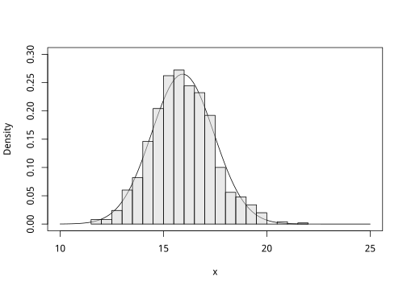

Chapter 9 The bootstrap
9.1 Introduction
In this chapter, we introduce the bootstrap, a very powerful and flexible method to estimate standard errors (SE) and confidence intervals (CI). This chapter contains a very non-technical description of the bootstrap, unlike most other descriptions of the method. We will also limit the description of the method to the simplest version of the bootstrap, known as the non-parametric bootstrap. In some example applications, though, we might use different flavours of the bootstrap with little justification or explanation.
There are a number of implementations of the bootstrap in R, including but not limited to the boot, bootstrap and resample packages, as well as numerous specific applications in many packages. We do not provide an overview of all implementations, but rather choose to use the very user-friendly implementation in the resample package, as well as a few more specific applications.
The bootstrap is a very flexible method, and can be applied in nearly any situation to calculate standard errors and confidence intervals for parameters, model predictions, parameter combinations, and so on. We encourage you to use the bootstrap when you can, but it is particularly important to use in the following cases:
- When we fit linear models with
lmorlmer, we make several assumptions on the nature of the data (homoscedascity, residuals normally distributed, etc.). If these assumptions are severely violated, we cannot trust the standard errors nor the confidence intervals of the fitted parameters, and thus will likely draw wrong conclusions. The bootstrap will be far more robust to violation of these assumptions. - Sometimes we want to draw conclusions about parameter combinations arising from a fitted model, and since there are rarely simple formulas for calculating the standard error of parameter combinations, the bootstrap offers a precise and practical method.
- In some, more complex models, no accurate approximation exists to calculate the standard error. Again the bootstrap can be used.
Before we explain the method in detail, we will first explain the concepts standard error, confidence interval, and sampling distribution in the terminology used in the rest of the chapter.
9.1.1 Standard errors and confidence intervals
Suppose you have a simple random sampling design: there is a population of items, and you wish to estimate the population mean by taking a random sample of 10 units. Clearly, if you take multiple random samples of 10 units, the mean estimated for each sample will differ. We know from statistical theory that the distribution of these sample means in fact follows a normal distribution (independent of the actual distribution of the population - this is the Central Limit Theorem). The distribution of the sample means is an example of a sampling distribution, and it describes how different our subsequent samples are, taken randomly from the population.
Now, the standard deviation of the sampling distribution is known as the standard error. Normally we estimate the standard error of the mean using the familiar equation, which follows from statistical theory,
\[SE = s / \sqrt{n}\]
where \(s\) is the sample standard deviation, that is, the standard deviation calculated from your sample, and \(n\) is the sample size (10 in this example).
In the following example, we make a population, take a sample and calculate the SE of the mean.
# An example population; simulated from the Weibull distribution
Population <- rweibull(100000, shape=2, scale=20)
# A random sample of 10 taken from the population
mysample <- sample(Population, 25, replace=FALSE)
# The mean and SE of the mean
mean(mysample)## [1] 19.73009sd(mysample)/sqrt(25)## [1] 1.649341Using standard statistical theory, the confidence interval is calculated using the sample standard error and quantiles from the t-distribution with n-1 degrees of freedom,
ciwidth <- qt(0.975, 25-1) * sd(mysample)/sqrt(25)
c(mean(mysample) - ciwidth, mean(mysample) + ciwidth)## [1] 16.32602 23.134169.1.2 Understanding the bootstrap
In this section we illustrate what the bootstrap does, and compare the calculated standard error and confidence interval from standard theory to those estimated with the bootstrap. If you want to skip straight to practical examples in R, simply continue in Section 9.2.
The basic idea of the bootstrap is very simple, and it is surprising that it actually works. To reiterate the point from the previous section, consider a population from which you have drawn a random sample, and you want to estimate the population mean based on your sample. The distribution of the means calculated from independent samples from the population is the sampling distribution, and this distribution cannot be observed because we only have one sample.
This is where the bootstrap comes in. If you draw a new sample based only on resampling your data with replacement, and repeat this many times, you then approximate the actual sampling distribution. This is rather strange, but should become more clear with some examples. The first example demonstrates that the sampling distribution is indeed very well approximated by the distribution of the bootstrap samples.
If you follow this example, you will see that the standard deviation of the bootstrap sample means is equal to the standard error of the mean, a point that we cannot reiterate often enough - because so often the meaning of ‘standard error’ is lost to the user.
# Set the sample size.
n <- 25
# This is the sample that you randomly selected from a population.
# (Population was generated in the above example)
mysample <- sample(Population, n)
# Calculate bootstrap sample means, 999 times. Store in vector.
# Note how we resample the sample with replacement.
means_boot <- replicate(999, mean(sample(mysample, replace=TRUE)))
# The curve is the sampling distribution as calculated for the normal distribution.
# Due to the Central Limit Theorem, the sampling distribution should be approx. normal.
curve(dnorm(x, mean=mean(mysample), sd=sd(mysample)/sqrt(n)), from=10, to=25,
ylab="Density", ylim=c(0,0.3))
# The histogram shows the sampling distribution for the bootstrap.
hist(means_boot, freq=FALSE, add=TRUE, breaks=25, col="#D3D3D380")
Also note that the sampling distribution converges to a normal distribution, as it should, even though in this example the underlying distribution was highly skewed (it was simulated from a Weibull distribution).
Now recall the example above where we calculated the SE based on just a single sample, using the well-known equation for the SE for the mean. The estimate was 1.5. In this particular case, we actually know the entire population (it is Population), and can test the bootstrap estimate of the SE via simulation. We can simply take a sample of 10 a thousand (or so) times, calculate the sample mean each time, and calculate the standard deviation across these 1000 sample means. Is it similar to our SE calculated for a single sample?
# Use replicate to take 1000 samples without replacement, calculate the mean.
# Here, 'means_sampled' can be interpreted as the real sampling distribution,
# since in this example we know the entire population.
means_sampled <- replicate(1000, mean(sample(Population, n, replace=FALSE)))
# The standard deviation of the sampling distribution is the standard error:
sd(means_sampled)## [1] 1.838504# Note that this value is very similar to the SE calculated with the
# usual formula, when based on a single sample:
sd(mysample) / sqrt(n)## [1] 1.504826# In the bootstrap, we resample *the single sample* many times, with replacement.
# Resample our sample 999 times, and calculate the mean each time.
# We already calculated these as the 'means_boot' object from the previous example.
# As before, the SD of the sampling distribution (here approximated via the bootstrap)
# is the standard error of the mean.
sd(means_boot)## [1] 1.493463Indeed the three calculated standard errors are very similar. Since the bootstrap depends on randomly selecting samples, of course it will be different every time you calculate it. However, if you take enough samples, the differences will be very small. If you find that the subsequent runs give quite different estimates, simply increase the number of replicates.
9.1.2.1 Confidence intervals for the mean
The confidence interval can be interpreted from the sampling distribution as a quantile. A 95% confidence interval is constructed as we find the lower value and upper value between which 95% of the sample means can be found (that is, 95% of the means calculated from the independent random samples taken from the population). In our example simulation we both have the “real” sampling distribution (based on taking many independent samples from the population), and the approximated sampling distribution from the bootstrap.
The following code compares the three methods to calculate the confidence interval.
# Standard theory
ciwidth <- qt(0.975, 25-1) * sd(mysample)/sqrt(25)
c(mean(mysample) - ciwidth, mean(mysample) + ciwidth)## [1] 12.82733 19.03894# Based on real sampling distribution
# (normally unknown, this only works in our simulation example)
quantile(means_sampled, probs=c(0.025, 0.975))## 2.5% 97.5%
## 14.06163 21.29133# Based on the bootstrap resampling
quantile(means_boot, probs=c(0.025, 0.975))## 2.5% 97.5%
## 13.06603 19.14264It turns out that a correction (known as the ‘bias-corrected bootstrap’, or ‘accelerated bootstrap’) has to be applied when calculating the confidence interval with the bootstrap, but this correction is usually small. It is however included in the resample package that we use further, but we will ignore it in the examples where we implement the bootstrap ourselves for reasons of clarity.
9.2 Applying the bootstrap
In the following sections, we will show a number of practical applications of the bootstrap. A few different functions are used as implementation of the bootstrap, we summarize them in the table below. Note that you can always fall back to writing loops and sampling yourself, as we have done in the previous section. However, it is recommended you use built-in implementations to save time and avoid mistakes.
bootstrap(fromresample) for any sample-based statistics that you can calculateBoot(fromcar) for bootstrapping regression (lmornls) models. Use to calculate SE and CI of regression coefficients.bootMer(fromlme4) for bootstrapping mixed-effects models with withlmer.PBmodcompfor likelihood ratio tests based on the bootstrap (forlmer,lm, and others)
9.2.1 A simple coin toss experiment
To get started with the resample package, we will look at a very simple example. You tossed a coin 14 times and would like to calculate a confidence interval on the probability of landing heads.
# Observations of coin tosses (1 = heads)
coins <- c(1, 0, 0, 1, 0, 1, 1, 0, 1, 0, 1, 1, 0, 0)
# For the bootstrap function
library(resample)
# Bootstrap on series of heads/tails defined above.
# (we use resample:: here, as boots)
b <- resample::bootstrap(coins, mean)
# Take a look at the estimated standard error and bias.
b## Call:
## resample::bootstrap(data = coins, statistic = mean)
## Replications: 10000
##
## Summary Statistics:
## Observed SE Mean Bias
## mean 0.5 0.1325894 0.5021143 0.002114286# The confidence interval can be calculated as,
CI.percentile(b)## 2.5% 97.5%
## mean 0.2142857 0.7857143In this above example, we chose the CI.percentile function to calculate the confidence interval, to be consistent with the quantile-based confidence intervals that we calculated in the previous examples. Note that a method with slightly better performance, known as the BCA interval, can be computed with CI.bca. The difference between the two methods is usually small, but it’s worth trying for yourself.
9.2.2 Confidence interval for a ratio
The usual method to calculate confidence intervals relies on the variable being approximately normally distributed. Ratios of two variables, for example the ratio between two treatments, can be far from normally distributed. The following example shows how to calculate the treatment ratio between irrigated and control trees in the HFE irrigation by fertilisation experiment. The idea here is that we would like to calculate the relative effect of a treatment, for example, “irrigation increased growth by 20-30%”.
data(hfeifplotmeans)
library(dplyr)
library(lubridate)
# Take subset, only 2012, and select only two variables.
hfe <- filter(hfeifplotmeans,
year(mdy(Date)) == 2012) %>%
dplyr::select(height, treat)
# A quick and simple way to place treatments next to each
# other, as columns:
hfe_wide <- unstack(hfe)
# If the first argument is a dataframe, simply refer
# to the column names like this.
hfeboot <- resample::bootstrap(hfe_wide, mean(I/C))
# Inspect object
hfeboot## Call:
## resample::bootstrap(data = hfe_wide, statistic = mean(I/C))
## Replications: 10000
##
## Summary Statistics:
## Observed SE Mean Bias
## mean(I/C) 1.314896 0.07113488 1.314642 -0.0002548568# And print the confidence interval for the treatment ratio
resample::CI.bca(hfeboot)## 2.5% 97.5%
## mean(I/C) 1.091542 1.4855179.2.3 Regression coefficients
In this example, we will look at the SE’s of regression coefficients, for which we use the Boot function in the car package. We continue with the Allometry data, fitting a quadratic linear model to height as a function of diameter (see Section 6.9.4). Here, we use only data for the psme species in the dataset.
data(allometry)
psme <- subset(allometry, species == "PSME")
# Fit a quadratic linear model to the simulated dataset.
lmq <- lm(height ~ diameter + I(diameter^2), data=psme)
# Look at the fitted coefficients, the standard errors, and confidence intervals
broom::tidy(lmq, conf.int = TRUE)## # A tibble: 3 x 7
## term estimate std.error statistic p.value conf.low conf.high
## <chr> <dbl> <dbl> <dbl> <dbl> <dbl> <dbl>
## 1 (Intercept) -3.09 1.45 -2.13 4.68e- 2 -6.13 -0.0485
## 2 diameter 1.34 0.0938 14.2 1.35e-11 1.14 1.53
## 3 I(diameter^2) -0.0126 0.00134 -9.41 1.39e- 8 -0.0154 -0.00981Using tidy, we quickly computed confidence intervals using standard theory. Now, let’s compare those calculated with the bootstrap.
# For 'Boot' (a convenient function to bootstrap regression models)
library(car)
# By default, Boot will run the model many (R) times, and save the
# fitted coefficients each time (see ?Boot on how to extract other metrics)
B <- Boot(lmq, R=999)
# Extract the standard errors and confidence interval
# (compare to above example, they are very close!)
cbind(SE = summary(B)$bootSE, confint(B))## SE 2.5 % 97.5 %
## (Intercept) 1.494112625 -5.78483900 0.101605230
## diameter 0.116515621 1.13068429 1.561703931
## I(diameter^2) 0.001962631 -0.01685629 -0.009739028In addition to calculating the SE and CI,We can also inspect the sampling distribution of the regression coefficients. All coefficients estimated for the bootstrap replicates is stored in the object returned by Boot, as a matrix where every row contains the coefficients for a fit.
# Extract coefficients, give the matrix column names
coefs <- as.data.frame(B$t)
names(coefs) <- c("b0","b1","b2")
# Histograms of all distributions
par(mfrow=c(1,3))
with(coefs, {
hist(b0, col="royalblue", main="b0")
hist(b1, col="darkorange", main="b1")
hist(b2, col="purple", main="b2")
})Figure 9.1: Histograms of the three coefficients of the quadratic linear model fit to the bootstrapped simulated data. These histograms approximate the sampling distribution of the regression coefficients, and we can calculate the SE and CI from them.
In this particular case the calculated SE with the bootstrap is quite close to the SE’s reported by lm, which gives us some confidence that the bootstrap really works. Most importantly, the bootstrap will give better estimates of the SE when the assumptions underlying lm are violated. We come back to this point in Section ??.
9.2.4 Confidence interval of parameter combinations
Let’s continue with the quadratic regression from the previous example, and try to calculate the confidence interval of the location of the optimum. Where is the value x where y is optimal (\(X_{opt}\)) and what is its approximate CI?
First, let’s figure out how we can find Xopt if all we have is the fitted equation, \[Y = b_0 + b_1 \cdot Y + b_2 \cdot X^2\]
First, we take the derivative with respect to X, and find the point where the derivative is zero (the slope of the curve is zero at its optimum), and solve for X.
\[Y'(X) = b_1 + 2 \cdot b_2*X\]
Now set this equal to 0, and solve for \(X_{opt}\),
\[b_1 + 2 \cdot b_2 \cdot X_{opt} = 0\] \[X_{opt} = -b_1 / (2 \cdot b_2)\]
For a non-linear parameter combination like this, you have only limited alternatives to the bootstrap (most notably the ‘Delta method’, see deltaMethod in the car package).
With the bootstrap, we can just calculate the sampling distribution of \(X_{opt}\) and find the CI from the quantiles of this distribution.
# We already have the sampling distribution from the previous example.
Xopt <- with(coefs, -b1/(2*b2))
# An approximate 95% confidence interval
Xopt_CI <- quantile(Xopt, c(0.025, 0.975))
Xopt_CI## 2.5% 97.5%
## 45.26817 56.37367And now we can make a plot with the prediction, the location of the optimum and its confidence interval (Fig. 9.2).
# Dataset along with model fits (and other useful metrics)
# We sort ('arrange') the data by diameter, to allow a line plot as below
psme_mod <- broom::augment(lmq, psme)
ggplot(psme_mod, aes(x = diameter, y = height)) +
geom_point(pch=19, col="grey") +
geom_line(aes(x = diameter, y = .fitted), col="red2") +
geom_vline(xintercept=mean(Xopt), col="blue", lwd=2) +
geom_vline(xintercept=Xopt_CI, col="blue", lty=5) +
expand_limits(x = 0, y = 0)Figure 9.2: Confidence interval for the location of the optimum as estimated with the bootstrap.
9.2.5 Regression when assumptions are violated
Two key assumptions in linear regression are that the errors are normally distributed, and that the error variance is constant (with respect to the predictors). If one or both of these assumptions is violated, then the standard errors of the coefficients will be especially biased. This could lead to wrong conclusions being drawn from the analysis.
In this example, we use the Coweeta tree data (already used in Section 6.9.3), an example where the variance increases quite strongly with x, and then compare the SE calculated in standard linear regression to the bootstrap SE. The bootstrap SE should be viewed as much closer to the ‘true’ SE, whereas the SE from linear regression will be biased because a key assumption is violated.
Now we calculate the SE of the slope and intercept with the bootstrap, and compare the results to the standard estimate as reported by lm. As we will see, standard errors are always underestimated by lm when the variance increases with the x-variable. This means that you are more likely to conclude a significant slope effect even when in fact there isn’t one.
data(coweeta)
# Standard lm fit
lmfit <- lm(folmass ~ biomass, data = coweeta)
# Bootstrap replicates.
# Inspect the b object : it contains slopes and intercepts of 999 fits
# to bootstrap resampled datasets.
b <- Boot(lmfit)
# Standard SE as reported by lm:
summary(lmfit)$coef[2,"Std. Error"]## [1] 0.0009271403# Bootstrap SE
summary(b)$bootSE[2]## [1] 0.001717881This example shows that the standard error calculated with the bootstrap is more than 50% larger than the one calculated with standard linear regression. Thus, if we trusted the usual standard errors, we would calculate confidence intervals that are 50% too narrow as well, giving too much confidence in our regression model.
9.2.6 Predictions by mixed-effects models
I will illustrate the use of the bootstrap in mixed-effects models with the ‘ChickWeight’ data (a built-in dataset in base R, see ?ChickWeight). In this dataset we have weights over time of chicks being fed one of four diets. The same chicks were reweighed, so we have a clear random effects structure (because the weighings are not independent observations). Suppose I am interested in the weight of chicks at a specified time, and want to test whether the diets have a significant effect on weight at that time.
First I will demonstrate the use of the bootstrap for this situation for lm, where we can compare the resulting SE’s also to predict.lm, if we set se=TRUE. This is a useful thing to do just to check that we set up the code correctly.
# Fit a linear model (ignoring repeated measures!)
fit1 <- lm(weight ~ Time*Diet, data=ChickWeight)
# Make dataframe for which we want predictions (recall from the
# above we are interested in Time=15)
newdat <- data.frame(Time=15, Diet=levels(ChickWeight$Diet))
# And predict from the model, also get SE
p <- predict(fit1, newdat, se=TRUE)
# Inspect the estimated SEs:
p$se.fit## 1 2 3 4
## 2.765187 3.630985 3.630985 3.710340Now we do the same using the bootstrap. When bootstrapping, we resample our data, fit the model, and repeat. We could program this from scratch, but we can also use Boot from car, like this.
library(car)
# Fit the model 999 times, apply a function each time. In this case,
# we predict from the model.
bootfit1 <- Boot(fit1, function(x)predict(x, newdat), R=999)
# The standard errors can be found with summary(),
# here showing only the one column with the SEs.
summary(bootfit1)$bootSE## [1] 3.743735 6.345572 5.649095 3.340820These four values are the SE of the predicted values of chick weight at Time=15 for each of the four Diets. Compared to the ones we calculated with predict above, the bootstrap SEs are much larger. It turns out, and you can check this for yourself, that we violated every single assumption in fitting the linear model to the ChickWeight data. Particularly in the case of non-constant variance, the SEs calculated by predict (and lm) are too small (which, as we already saw, is the case when the variance increases with the independent variable).
When your regression assumptions are violated and you cannot find a solution, use the bootstrap as the standard errors calculated with that are still valid.
9.2.6.1 Bootstrapping a linear mixed-effects model
We repeat the above using a mixed-effects model, where we can take into account the fact that the same chicks were measured over time, that is, we have a repeated-measures structure. The approach is identical to the example with lm(), just the details of the implementation are different. Note that because mixed-effects models take some effort to fit, the bootstrap may take quite a while on a slower machine.
You may receive some warnings about the model not converging, you can safely ignore that (the model won’t fit to some rare resampled datasets).
# Load lmerTest so we can use the rand function below.
library(lmerTest)
# Chicks are remeasured, we will use a random intercept for each Chick.
fit2 <- lmer(weight ~ Time*Diet + (1|Chick),
data=ChickWeight)
# quickly test if we need a random effect, in other words, are
# individual chicks really that different?
ranova(fit2)## ANOVA-like table for random-effects: Single term deletions
##
## Model:
## weight ~ Time + Diet + (1 | Chick) + Time:Diet
## npar logLik AIC LRT Df Pr(>Chisq)
## <none> 10 -2733.4 5486.9
## (1 | Chick) 9 -2847.3 5712.7 227.75 1 < 2.2e-16 ***
## ---
## Signif. codes: 0 '***' 0.001 '**' 0.01 '*' 0.05 '.' 0.1 ' ' 1# bootMer from lme4 is similar to bootCase from car (but poorly documented)
# Make sure to set re.form=NA to output only predictions using the fixed effects.
bootfit2 <- bootMer(fit2, FUN=function(x)predict(x, newdat, re.form=NA),
nsim=999)
# We have to find that the $t element contains the predictions output by bootMer.
apply(bootfit2$t, 2, sd)## 1 2 3 4
## 5.886949 7.848398 7.987054 7.657460Once again the standard errors of the predictions are even larger. This makes sense because we included random Chick effect in the model. The added uncertainty comes from the fact that the Chicks differ a lot in weight at Time=15, and this uncertainty has an effect on the estimates of the fixed effects as well (which in turn, affects the predicted weight of the chicks at Time=15).
9.2.6.2 Confidence intervals on model predictions
Finally, instead of just predicting at Time=15, it is now straightforward to predict across the entire range of the data, so we can plot confidence intervals around the prediction.
To generate the figure with a confidence interval around the fitted line, we will redo the bootstrap, since this time we want predictions for all values of Time (not just Time=15). It is convenient to know that if we call predict without a data argument, it will predict for all X values used when fitting the model. The following example makes Fig. 9.3).
Note that we use here the broom package for augment, dplyr for mutate, ggplot2 and ggthemes for plotting, and scales for transparency.
# Bootstrap on a fitted model with lmer()
# Note that we are excluding the random effects, thus showing only
# the uncertainty associated with the fixed effects.
bb <- bootMer(fit2,
FUN=function(x)predict(x, re.form=NA),
nsim=500)
augment(fit2, ChickWeight) %>%
mutate(lci = apply(bb$t, 2, quantile, 0.025),
uci = apply(bb$t, 2, quantile, 0.975)) %>%
ggplot(aes(x = Time, y = weight, group = Diet)) +
geom_point(pch=19, col="grey") +
geom_ribbon(aes(x = Time, ymin = lci, ymax=uci),
fill = scales::alpha("grey", 0.7)) +
geom_line(aes(x = Time, y=.fixed, col=Diet), size=1.5) +
scale_colour_tableau()Figure 9.3: Confidence interval for the increase in chick weight over time as estimated with the bootstrap.